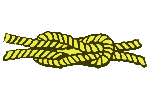
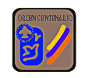
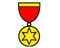
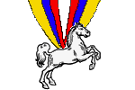
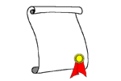

Condecoraciones y Distinciones
La Asociación de Scouts de Venezuela establece un sistema de recompensas con el fin de reconocer y premiar las actuaciones de sus miembros y de otras personas naturales o jurídicas externas al Escultismo, que en alguna forma hayan beneficiado o coadyuvado al logro de los fines del Movimiento Scout, así como para promover y motivar de manera permanente las acciones en favor de la juventud venezolana.
El sistema de recompensas se regirá por el Reglamento de Condecoraciones y Distinciones de la ASV. (Artículo 1)
Distinción o Reconocimiento
Importante: Esta solicitud electrónica es válida
únicamente en la Región Falcón
Información sobre quien solicita, quien otorga y cuales son los méritos necesarios
Barras  Nudos  Ordenes  Medallas  Condecoraciones  ReconocimientosTodos los textos están basado en el Reglamento de Condecoraciones y Distinciones aprobado en sesión ordinaria del Consejo Nacional el día 18 de Octubre de 2007 y que entró en vigencia el día 18 de Noviembre de 2007.